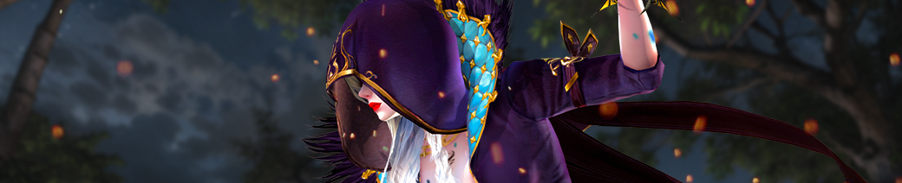

Autumn Double Treat! Event
秋日雙重好禮
麗貝卡與雷文的兩項秋季任務同時開放，各有每日和累計獎勵。
活動為期 4 週，所有家族皆可參加。
開始2026年11月18日例行維護後
結束2026年12月16日例行維護時
我也能享受秋天了！
進入城鎮後會收到活動任務郵件。到立普圖衛中央廣場與 NPC「麗貝卡（Rebecca）」對話，即可接取活動任務。
每日任務獎勵
| 道具 | 數量 |
|---|---|
| 瑞茲的法蘭諾粉末箱子 | 2 |
| 活動用基礎提升藥劑 | 2 |
累計完成獎勵
| 完成次數 | 道具 | 數量 |
|---|---|---|
| 3 | 活動用訓練卡片G | 10 |
| 5 | 活動用力量的戒指箱子 | 3 |
| 5 | 活動用技術的戒指箱子 | 3 |
| 5 | 活動用智力的戒指箱子 | 3 |
| 7 | 活動用家族大廳增加許可證 | 5 |
| 10 | 活動用卡勒希亞髮型箱子 | 1 |
| 13 | 活動用掉落率教範－達人篇（7天） | 1 |
| 15 | 活動用南瓜頭爸爸（7日，背部造型） | 1 |
| 17 | 活動用附加獎勵券 | 2 |
| 19 | 信任的象徵 | 1 |
| 21 | 活動用卡勒希亞服飾箱子 | 1 |
| 24 | 收藏用神聖角色卡箱兌換券 | 2 |
| 25 | 活動用38等級武器箱子 | 2 |
打起精神來！

進入城鎮後會收到活動任務郵件。到立普圖衛中央廣場與 NPC「雷文（Raven）」對話，即可接取活動任務。
每日任務獎勵
| 道具 | 數量 |
|---|---|
| 達人G經驗值卡片 | 5 |
| 寵物飼料 | 5 |
| 活動用強化生命力生成器 | 3 |
累計完成獎勵
| 完成次數 | 道具 | 數量 |
|---|---|---|
| 3 | 活動用訓練卡片G | 20 |
| 4 | 活動用靈魂水晶 | 5 |
| 6 | 活動用戰鬥手冊－達人版（7天） | 1 |
| 7 | 活動用家族大廳增加許可證 | 5 |
| 9 | 收藏用神聖角色卡箱兌換券 | 1 |
| 10 | 活動用莎拉的眼淚 | 1 |
| 13 | 活動用神器研磨劑 | 5 |
| 14 | 活動用提升藥劑箱子（單一角色） | 2 |
| 15 | 褪色的法蘭諾祝福－37級 | 2 |
| 17 | 活動用客製化翅膀100點卡片 | 3 |
| 19 | 活動用法蘭諾武器召喚石 | 2 |
| 20 | 比鬼還可怕！（勳章） | 1 |
| 22 | 活動用星之淚 | 1 |
| 24 | 褪色的法蘭諾祝福－38級 | 1 |
| 25 | 活動用五元素武器召喚石 | 2 |